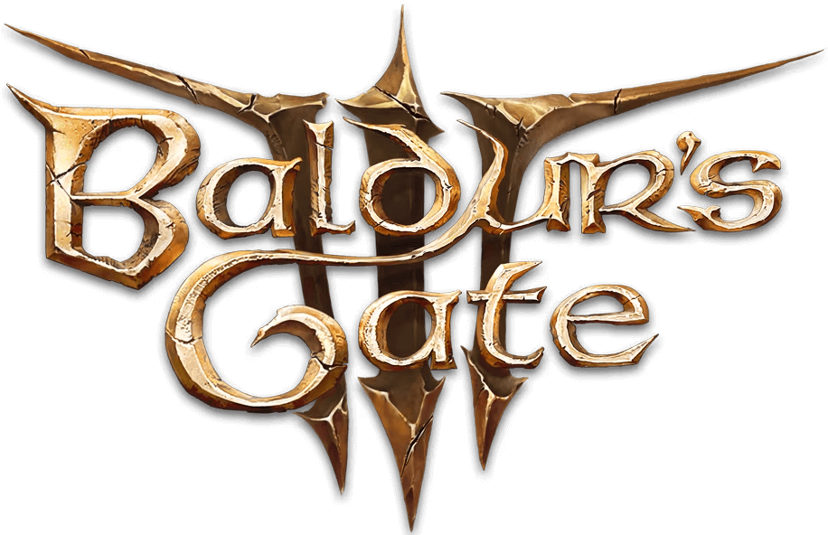
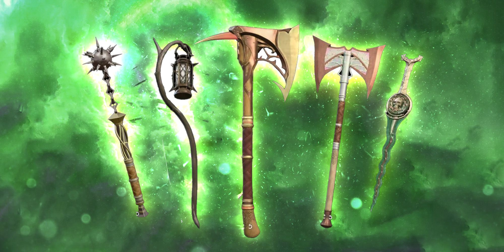
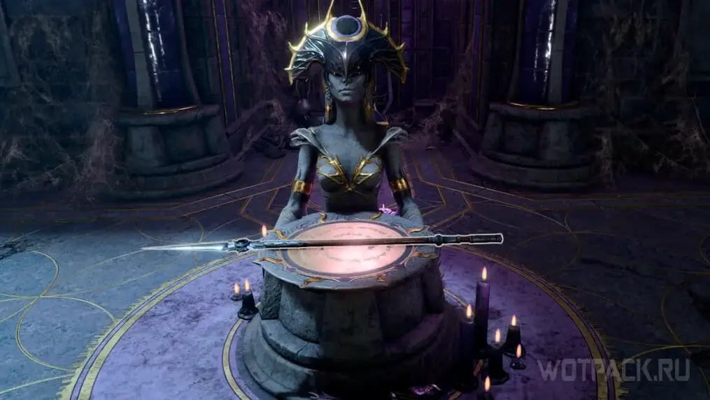
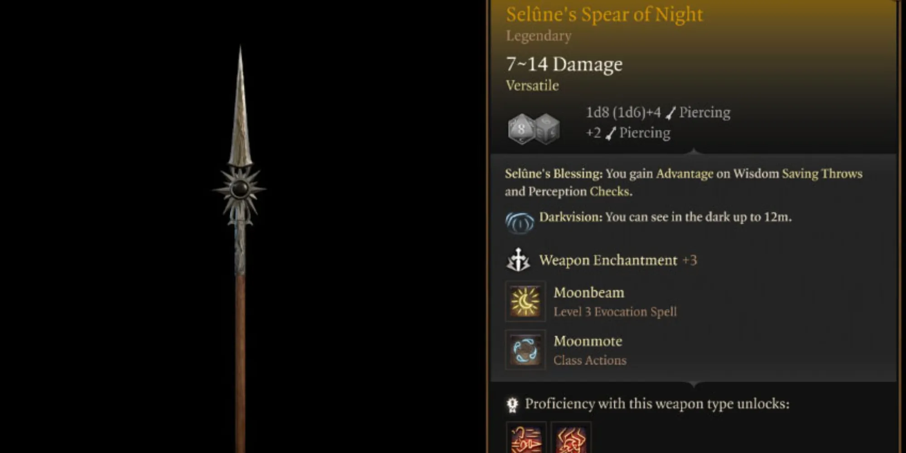
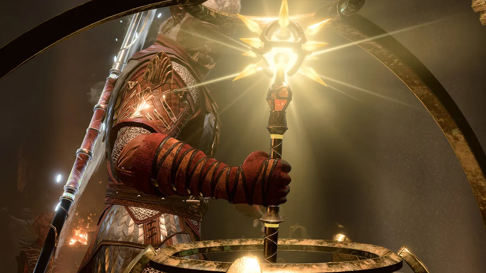
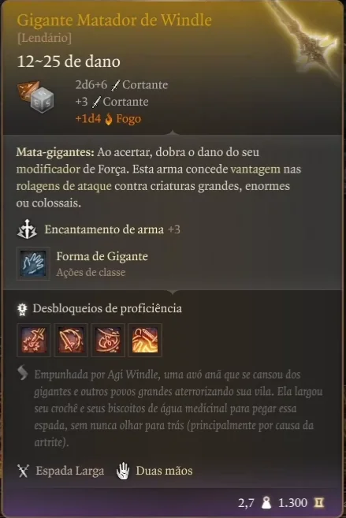

Itens Lendários
Pagina inicial
Herois
Vilões
Itens Lendarios
Avaliações

Nome
Imagem
Martelo Orfico
Lança da noite de Shar

Lança da noite de Selûne

Sangue de Lathander

Matador de Gigantes de Balduran
